This glassbox function (in contrast to a "black box" function where you run
it and get a result but have no (or little) idea as to how you got from input
to output) has a few primary benefits over calling each exported function
from eyeris separately.
Usage
glassbox(
file,
interactive_preview = FALSE,
preview_n = 3,
preview_duration = 5,
preview_window = NULL,
verbose = TRUE,
...,
confirm = deprecated(),
num_previews = deprecated(),
detrend_data = deprecated(),
skip_detransient = deprecated()
)Arguments
- file
An SR Research EyeLink
.ascfile generated by the official EyeLinkedf2asccommand- interactive_preview
A flag to indicate whether to run the
glassboxpipeline autonomously all the way through (set toFALSEby default), or to interactively provide a visualization after each pipeline step, where you must also indicate "(y)es" or "(n)o" to either proceed or cancel the currentglassboxpipeline operation (set toTRUE)- preview_n
Number of random example "epochs" to generate for previewing the effect of each preprocessing step on the pupil timeseries
- preview_duration
Time in seconds of each randomly selected preview
- preview_window
The start and stop raw timestamps used to subset the preprocessed data from each step of the
eyerisworkflow for visualization. Defaults to NULL, meaning random epochs as defined bypreview_nandpreview_durationwill be plotted. To override the random epochs, setpreview_windowhere to a vector with relative start and stop times (in seconds), for example –c(5,6)– to indicate the raw data from 5-6 secs on data that were recorded at 1000 Hz). Note, the start/stop time values indicated here are in seconds becauseeyerisautomatically computes the indices for the supplied range of seconds using the$info$sample.ratemetadata in theeyerisS3 class object- verbose
A logical flag to indicate whether to print status messages to the console. Defaults to
TRUE. Set toFALSEto suppress messages about the current processing step and run silently- ...
Additional arguments to override the default, prescribed settings
- confirm
(Deprecated) Use
interactive_previewinstead- num_previews
(Deprecated) Use
preview_ninstead- detrend_data
(Deprecated) A flag to indicate whether to run the
detrendstep (set toFALSEby default). Detrending your pupil timeseries can have unintended consequences; we thus recommend that users understand the implications of detrending – in addition to whether detrending is appropriate for the research design and question(s) – before using this function- skip_detransient
(Deprecated) A flag to indicate whether to skip the
detransientstep (set toFALSEby default). In most cases, this should remainFALSE. For a more detailed description about likely edge cases that would prompt you to set this toTRUE, see the docs fordetransient()
Details
First, this glassbox function provides a highly opinionated prescription of
steps and starting parameters we believe any pupillometry researcher should
use as their defaults when preprocessing pupillometry data.
Second, and not mutually exclusive from the first point, using this function should ideally reduce the probability of accidental mishaps when "reimplementing" the steps from the preprocessing pipeline both within and across projects. We hope to streamline the process in such a way that you could collect a pupillometry dataset and within a few minutes assess the quality of those data while simultaneously running a full preprocessing pipeline in 1-ish line of code!
Third, glassbox provides an "interactive" framework where you can evaluate
the consequences of the parameters within each step on your data in real
time, facilitating a fairly easy-to-use workflow for parameter optimization
on your particular dataset. This process essentially takes each of the
opinionated steps and provides a pre-/post-plot of the timeseries data for
each step so you can adjust parameters and re-run the pipeline until you are
satisfied with the choices of your parameters and their consequences on your
pupil timeseries data.
Examples
demo_data <- eyelink_asc_demo_dataset()
# (1) examples using the default prescribed parameters and pipeline recipe
## (a) run an automated pipeline with no real-time inspection of parameters
output <- eyeris::glassbox(demo_data)
#> ✔ [2025-08-03 08:56:48] [OKAY] Running eyeris::load_asc()
#> ℹ [2025-08-03 08:56:48] [INFO] Processing block: block_1
#> ✔ [2025-08-03 08:56:48] [OKAY] Running eyeris::deblink() for block_1
#> ✔ [2025-08-03 08:56:48] [OKAY] Running eyeris::detransient() for block_1
#> ✔ [2025-08-03 08:56:48] [OKAY] Running eyeris::interpolate() for block_1
#> ✔ [2025-08-03 08:56:48] [OKAY] Running eyeris::lpfilt() for block_1
 #> ! [2025-08-03 08:56:48] [WARN] Skipping eyeris::downsample() for block_1
#> ! [2025-08-03 08:56:48] [WARN] Skipping eyeris::bin() for block_1
#> ! [2025-08-03 08:56:48] [WARN] Skipping eyeris::detrend() for block_1
#> ✔ [2025-08-03 08:56:48] [OKAY] Running eyeris::zscore() for block_1
#> ℹ [2025-08-03 08:56:48] [INFO] Block processing summary:
#> ℹ [2025-08-03 08:56:48] [INFO] block_1: OK (steps: 6, latest:
#> pupil_raw_deblink_detransient_interpolate_lpfilt_z)
#> ✔ [2025-08-03 08:56:48] [OKAY] Running eyeris::summarize_confounds()
start_time <- min(output$timeseries$block_1$time_secs)
end_time <- max(output$timeseries$block_1$time_secs)
# by default, verbose = TRUE. To suppress messages, set verbose = FALSE.
plot(
output,
steps = c(1, 5),
preview_window = c(start_time, end_time),
seed = 0
)
#> ℹ [2025-08-03 08:56:48] [INFO] Plotting block 1 with sampling rate 1000 Hz from
#> possible blocks: 1
#> ! [2025-08-03 08:56:48] [WARN] Skipping eyeris::downsample() for block_1
#> ! [2025-08-03 08:56:48] [WARN] Skipping eyeris::bin() for block_1
#> ! [2025-08-03 08:56:48] [WARN] Skipping eyeris::detrend() for block_1
#> ✔ [2025-08-03 08:56:48] [OKAY] Running eyeris::zscore() for block_1
#> ℹ [2025-08-03 08:56:48] [INFO] Block processing summary:
#> ℹ [2025-08-03 08:56:48] [INFO] block_1: OK (steps: 6, latest:
#> pupil_raw_deblink_detransient_interpolate_lpfilt_z)
#> ✔ [2025-08-03 08:56:48] [OKAY] Running eyeris::summarize_confounds()
start_time <- min(output$timeseries$block_1$time_secs)
end_time <- max(output$timeseries$block_1$time_secs)
# by default, verbose = TRUE. To suppress messages, set verbose = FALSE.
plot(
output,
steps = c(1, 5),
preview_window = c(start_time, end_time),
seed = 0
)
#> ℹ [2025-08-03 08:56:48] [INFO] Plotting block 1 with sampling rate 1000 Hz from
#> possible blocks: 1
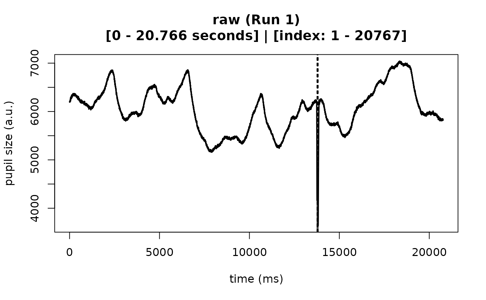
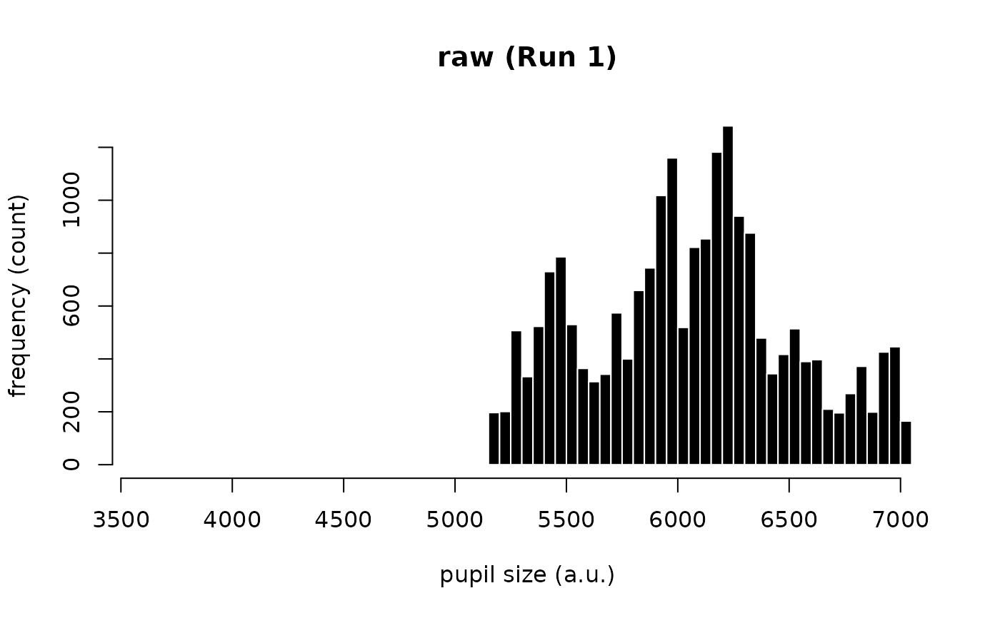
## (b) run a interactive workflow (with confirmation prompts after each step)
# \donttest{
output <- eyeris::glassbox(demo_data, interactive_preview = TRUE, seed = 0)
#> ✔ [2025-08-03 08:56:48] [OKAY] Running eyeris::load_asc()
#> ℹ [2025-08-03 08:56:48] [INFO] Plotting block 1 with sampling rate 1000 Hz from
#> possible blocks: 1
 #> Continue? [Yes/No]:
#> ℹ [2025-08-03 08:56:48] [INFO] Process cancelled after loading data. Adjust
#> your parameters and re-run!
# }
# (2) examples of overriding the default parameters
output <- eyeris::glassbox(
demo_data,
interactive_preview = FALSE, # TRUE to visualize each step in real-time
deblink = list(extend = 40),
lpfilt = list(plot_freqz = TRUE) # overrides verbose parameter
)
#> ✔ [2025-08-03 08:56:48] [OKAY] Running eyeris::load_asc()
#> ℹ [2025-08-03 08:56:48] [INFO] Processing block: block_1
#> ✔ [2025-08-03 08:56:48] [OKAY] Running eyeris::deblink() for block_1
#> ✔ [2025-08-03 08:56:48] [OKAY] Running eyeris::detransient() for block_1
#> ✔ [2025-08-03 08:56:49] [OKAY] Running eyeris::interpolate() for block_1
#> ✔ [2025-08-03 08:56:49] [OKAY] Running eyeris::lpfilt() for block_1
#> Continue? [Yes/No]:
#> ℹ [2025-08-03 08:56:48] [INFO] Process cancelled after loading data. Adjust
#> your parameters and re-run!
# }
# (2) examples of overriding the default parameters
output <- eyeris::glassbox(
demo_data,
interactive_preview = FALSE, # TRUE to visualize each step in real-time
deblink = list(extend = 40),
lpfilt = list(plot_freqz = TRUE) # overrides verbose parameter
)
#> ✔ [2025-08-03 08:56:48] [OKAY] Running eyeris::load_asc()
#> ℹ [2025-08-03 08:56:48] [INFO] Processing block: block_1
#> ✔ [2025-08-03 08:56:48] [OKAY] Running eyeris::deblink() for block_1
#> ✔ [2025-08-03 08:56:48] [OKAY] Running eyeris::detransient() for block_1
#> ✔ [2025-08-03 08:56:49] [OKAY] Running eyeris::interpolate() for block_1
#> ✔ [2025-08-03 08:56:49] [OKAY] Running eyeris::lpfilt() for block_1
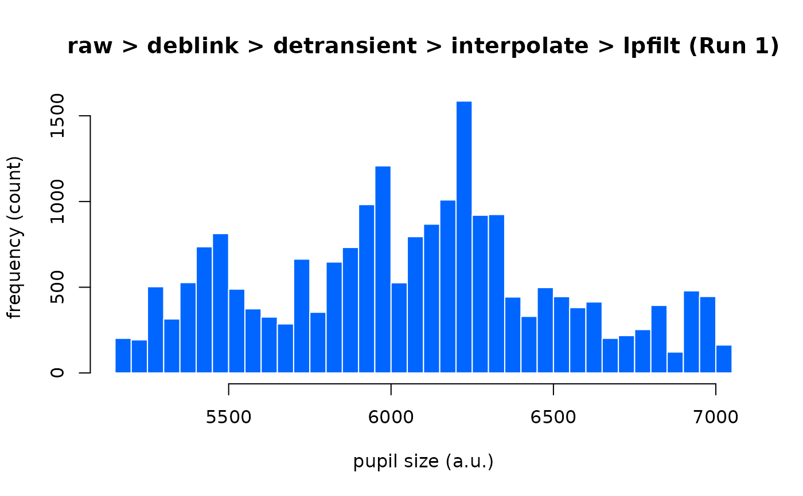
#> ! [2025-08-03 08:56:49] [WARN] Skipping eyeris::downsample() for block_1
#> ! [2025-08-03 08:56:49] [WARN] Skipping eyeris::bin() for block_1
#> ! [2025-08-03 08:56:49] [WARN] Skipping eyeris::detrend() for block_1
#> ✔ [2025-08-03 08:56:49] [OKAY] Running eyeris::zscore() for block_1
#> ℹ [2025-08-03 08:56:49] [INFO] Block processing summary:
#> ℹ [2025-08-03 08:56:49] [INFO] block_1: OK (steps: 6, latest:
#> pupil_raw_deblink_detransient_interpolate_lpfilt_z)
#> ✔ [2025-08-03 08:56:49] [OKAY] Running eyeris::summarize_confounds()
# to suppress messages, set verbose = FALSE in plot():
plot(output, seed = 0, verbose = FALSE)
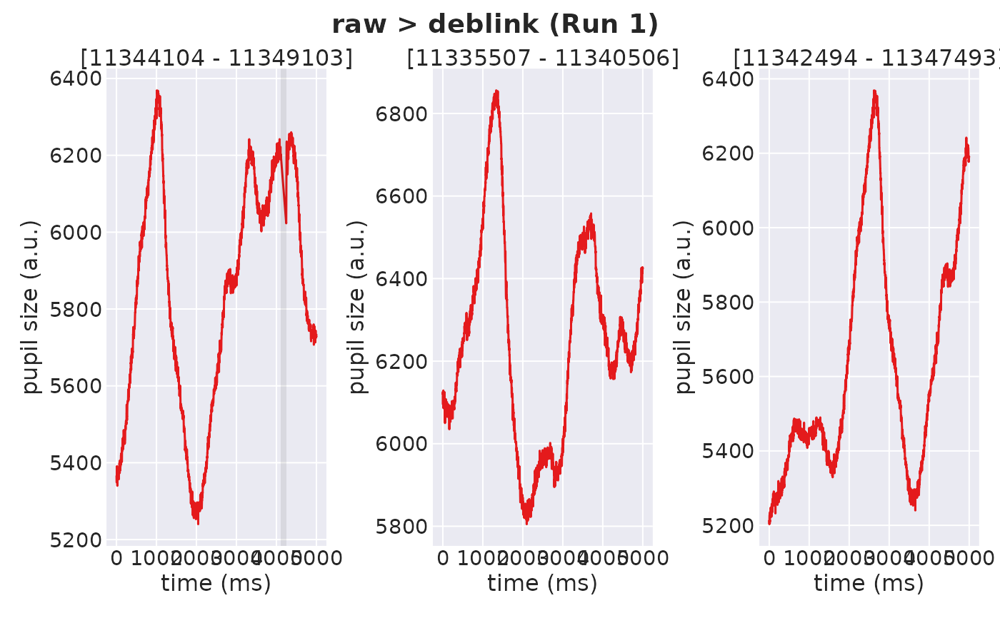
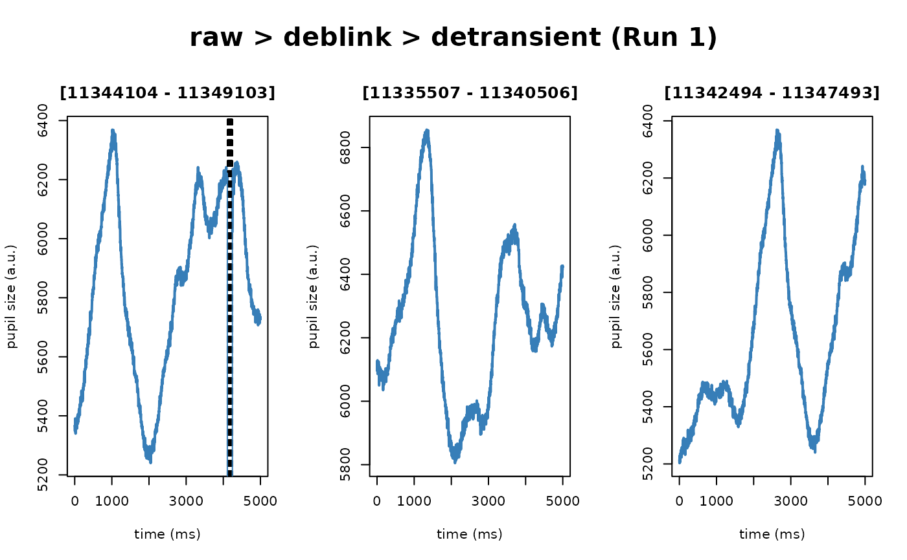
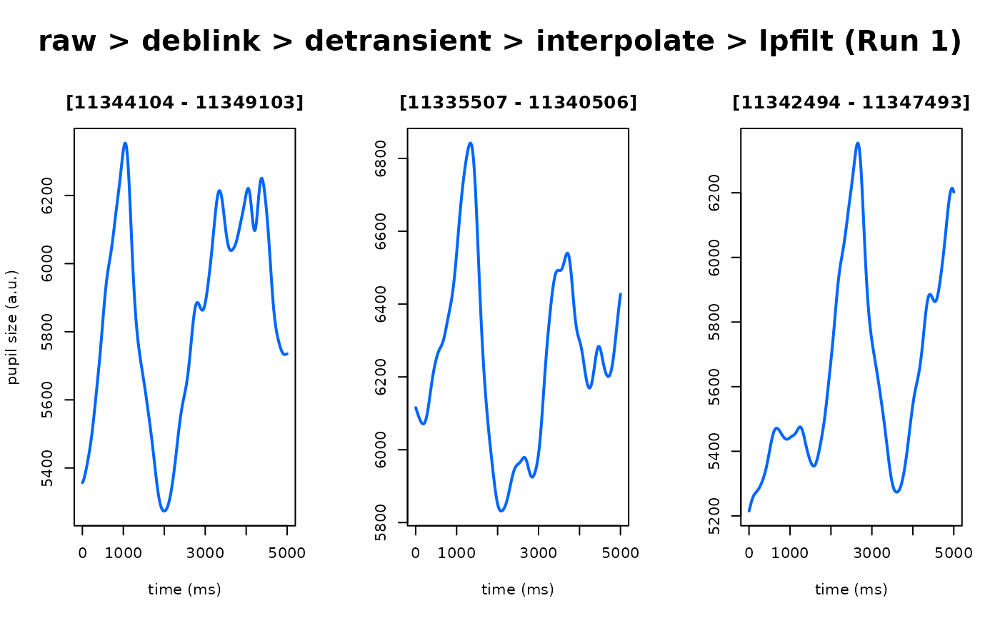
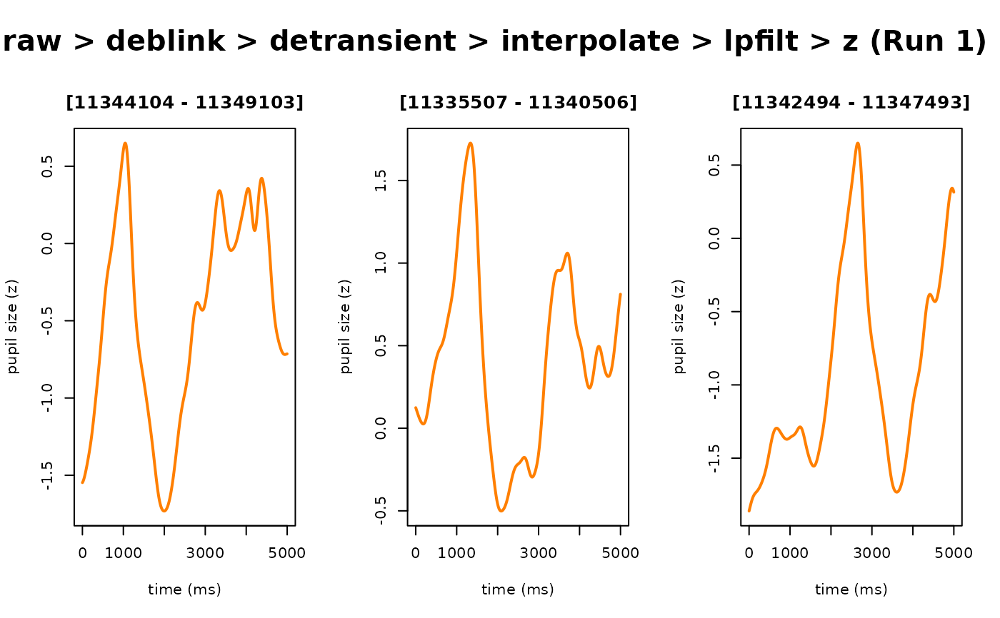
# (3) examples of disabling certain steps
output <- eyeris::glassbox(
demo_data,
detransient = FALSE,
detrend = FALSE,
zscore = FALSE
)
#> ✔ [2025-08-03 08:56:49] [OKAY] Running eyeris::load_asc()
#> ℹ [2025-08-03 08:56:49] [INFO] Processing block: block_1
#> ✔ [2025-08-03 08:56:49] [OKAY] Running eyeris::deblink() for block_1
#> ! [2025-08-03 08:56:49] [WARN] Skipping eyeris::detransient() for block_1
#> ✔ [2025-08-03 08:56:49] [OKAY] Running eyeris::interpolate() for block_1
#> ✔ [2025-08-03 08:56:49] [OKAY] Running eyeris::lpfilt() for block_1
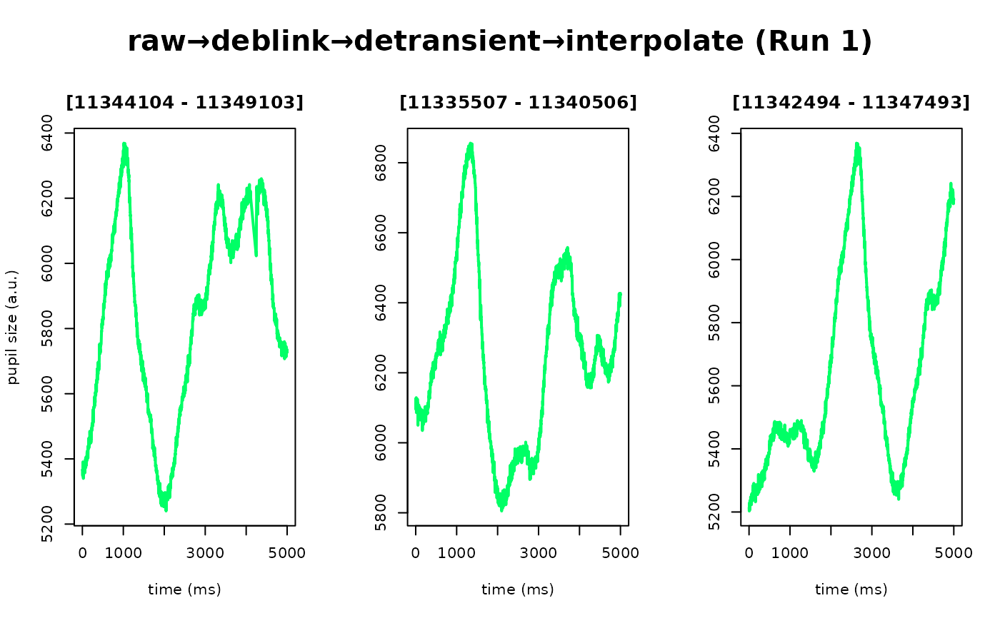
#> ! [2025-08-03 08:56:49] [WARN] Skipping eyeris::downsample() for block_1
#> ! [2025-08-03 08:56:49] [WARN] Skipping eyeris::bin() for block_1
#> ! [2025-08-03 08:56:49] [WARN] Skipping eyeris::detrend() for block_1
#> ! [2025-08-03 08:56:49] [WARN] Skipping eyeris::zscore() for block_1
#> ℹ [2025-08-03 08:56:49] [INFO] Block processing summary:
#> ℹ [2025-08-03 08:56:49] [INFO] block_1: OK (steps: 4, latest:
#> pupil_raw_deblink_interpolate_lpfilt)
#> ✔ [2025-08-03 08:56:49] [OKAY] Running eyeris::summarize_confounds()
plot(output, seed = 0)
#> ℹ [2025-08-03 08:56:49] [INFO] Plotting block 1 with sampling rate 1000 Hz from
#> possible blocks: 1
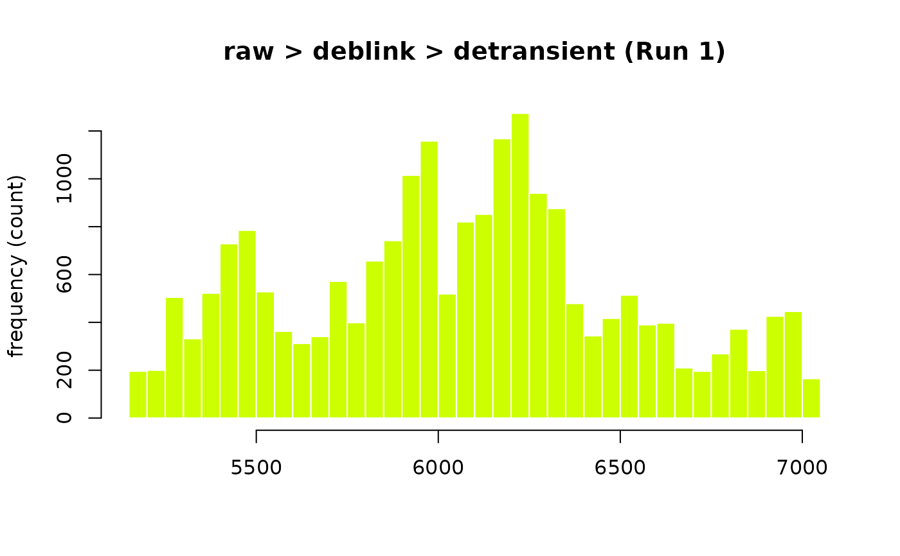

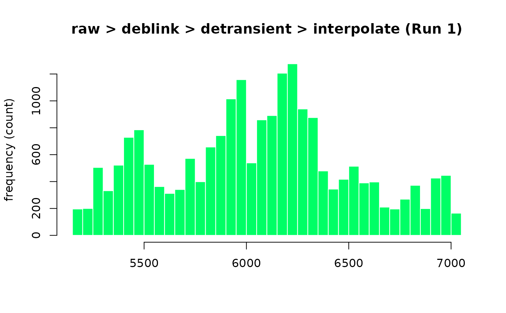
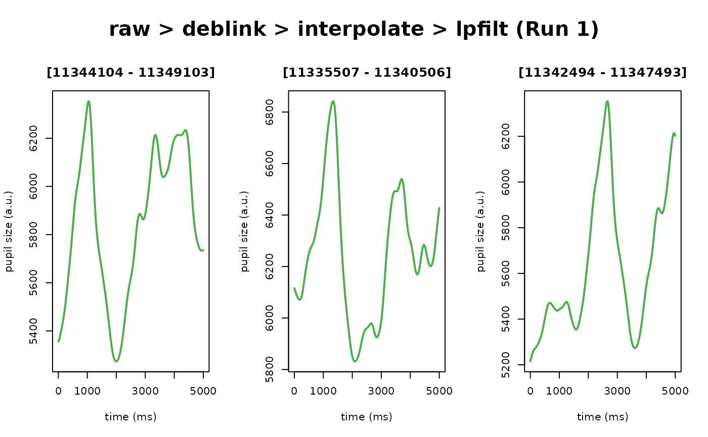